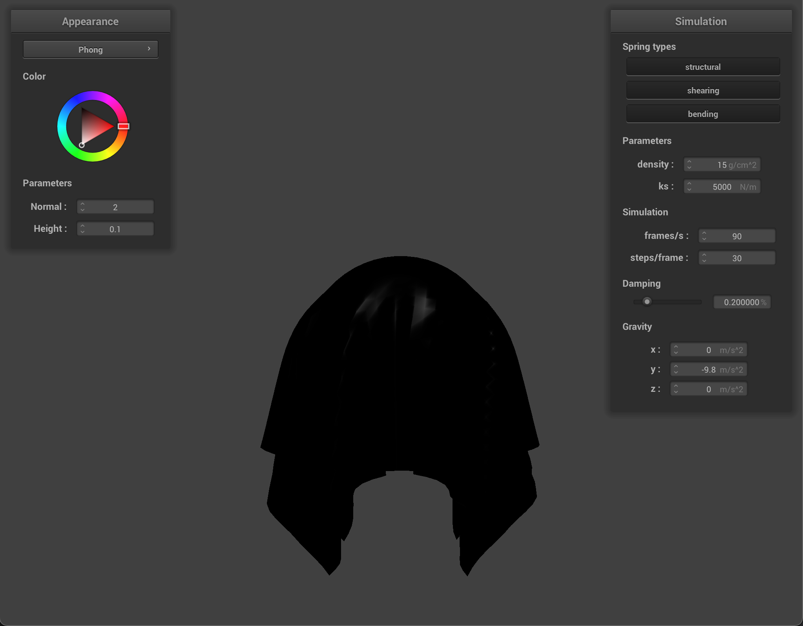

Overview
In this project I built a physics simulator for a cloth. This required first defining and creating the cloth object itself, and then applying Verlet integration to simulate the forces acting on the cloth.
The cloth model in this project used an array points connected by springs to simulate the deformable nature of the cloth, and the physics simulation consisted of both the inner-cloth spring forces and the outer forces acting on the cloth.
We also implemented object collisions, both between the cloth and other objects and the cloth with itself. Collisions consisted of first detecting whether a point on the cloth had collided with an object, and then modifying the position
of the point to be resting on the surface of the collided object. Finally, I implemented several different shaders to color the cloth in interesting and/or realistic ways.
Part I: Masses and springs
Part II: Simulation via numerical integration
|
Reference: Default values
|
|
Increased spring constant
|
Decreased spring constant
|
|
Increased density
|
Decreased density
|
|
Increased Dampening
|
Decreased Dampening
|
The primary effect of the spring constant is how "stretchy" the cloth appears to be. Increasing the spring constant causes it to act more rigidle, while a decreased
spring constant causes it to fold over more. Desnity has close to the opposite effect, but for different reasons. A cloth with a high spring constant doesn't deform because the
stronger force of the springs is able to counter the force of gravity, where a less dense cloth appears rigid because the force from gravity is lessened and isn't able to compete with the force of the
springs. The inverse is also true. Dampening doesn't have much of an effect on the final position of the cloth, but affects how it simulates. Less dampening causes the cloth to swing back and forth, and at very
low damplening there are even ripples in the cloth surface that aren't normally visible. High dampening causes the cloth to move very slowly and smoothly. If the simulation is allowed to run long enough for the cloth to
come to rest (which doesn't happen at zero dampening), the cloth looks like the Default one, so I tried to get action shots for the images.
|
pinned 4, default settings
|
Part III: Handling collisions with other objects
These results are about what you'd expect given the results from part 2. The higher the spring constant gets, the more the cloth resists deformation from outside forces. The low spring constant cloth is able to
hug the sphere tightly, but the high spring-constant cloth is far less deformed. The most noticable effect of this is that, as the spring constant increases, the number of folds in the cloth decreases. Due to the increased spring power, the kd = 500,000 cloth
can bend less per pointmass, so it's bends come with less frequency.
Part IV: Handling self-collisions
|
Beginning
|
 Middle
Middle
|
It's tough to show the actions of the cloth through still images, but I did my best to get some action shots to characterize each setting.
Decreasing the density causes the top of the cloth to bounch of the bottom half and fall to the side, increasing the density causes the cloth to remain flattened and crumpled.
Lowering the spring constant causes the cloth to act almost like a fluid. You can see in the image noticable ripples, as the main forces left action on the point masses are self-collisions.
Increasing the spring constant leads to the cloth folding onto itself less, which leads the cloth to eventually lie mostly flat.
To reiterate, Raising the spring constant and decreasing the density both result in a less "crumpled" cloth, but where the higher spring contant prevents crumpling outright, lower density lets the cloth bounce into a flatter position.
The reverse is also true: denser cloths remain folded up on eachother after the initial fall due to the overwhelming downwards gravity force, and low spring constant cloths stay folded since no major force is there to un-fold them.
|
Less Density
|
More Density
|
|
Less spring constant
|
More spring constant
|
Part V: Shaders
Shaders are programs meant to run in parallel on the GPU. They're ususually used for graphics, but they don't have to be. In this part we use vertex and fragment shaders to render
the mesh. First, the simulated mesh objects are passed into the vertex shader, which modifies the verticies of the mesh in preperation for rendering (for most of the shaders in this part, this
just means transforming the verticies into world and camera spaces for the fragment shader and final image). Then the fragment shader takes over, and for each fragment (which is similar to a pixel) the fragment shader calculates
the color at that point. Most material shading is done by the fragment shader, but for displacement mapping the vertex shader also has to nudge the position of the mesh. In short, the vetex shader determines the shape of the mesh, and the fragment
shader determines the color.
Blinn-Phong
The Blinn-Phong shading model splits the light associated with a point on the mesh into three parts: Specular, Diffuse, and Ambient lighting. Diffuse lighting is the same as the diffuse lighting used in project 3, light is assumed to
scatter uniformly off the surface, so the only angle used in calculation is the angle from the light source to the surface normal. Specular lighting is meant for the "shiny" component of the material, and also incorperates the angle the point on the surface is being
viewed at by the camera. Ambient light represents the global illumination of the object by simply adding a bit of illumination to all parts of the scene. While Blinn-Phong isn't physically accurate, modifying the weights and variables of these three lighting components can
give a good aproximation of many different types of surface materials.
|
Ambient
|
Diffuse
|
|

Specular
|
Full Blinn-Phong
|
Texture mapping
|
Texture mapped cloth-on-sphere
|
Bump and Displacement mapping
|
Bump mapped sphere
|
Bump mapped cloth
|
|
Displacement mapped sphere
|
Bump mapping and displacement mapping both try to increase the resolution of the material in the image beyond what is calculated in the mesh itself.
Bump mapping does this by modifying the normals of the material so that it will reflect light as if it had more detail, and displacement mapping adds to this
strategy by also modifying the verticies of the mesh itself. Both shaders begin to break down when trying to show larger changes in the shape of the matetrial. This means that, when
looking straight at the object these shaders are running on, there's barely any visible difference between bump mapping and displacement mapping. Only by looking at the edge of the rendered sphere can you see
that displacement mapping a slightly modified the silloette of the sphere, while bump mapping has left the sphere the same.
|
Bump map with 16 resolution
|
Bump map with 128 resolution
|
|
Displacement map with 16 resolution
|
Displacement map with 128 resolution
|
Above you can see how the resolution of the sphere mesh affect the two shaders. Bump mapping is essentially unnefected, with the only visible change being higher resolution on the edge of the sphere, which doesn't have anything to do with bump mapping.
Displacement mapping simply doesn't work at low resolutions relative to the texture it's trying to map. The texture I choose is mostly flat, with a few high frequency changes. At low resolution, these changes are averaged to nothing by the macro shape of the texture, that
displacement mapping has essentially no effect compared to bump mapping. At the higher resolution displacement mapping is able properly to show the texture: you can see divots in the edge of the sphere where the space between the bricks should be.
Mirror Shader
|
Mirror Sphere
|
Mirror Cloth
|